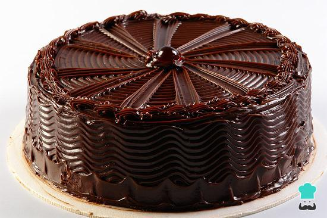
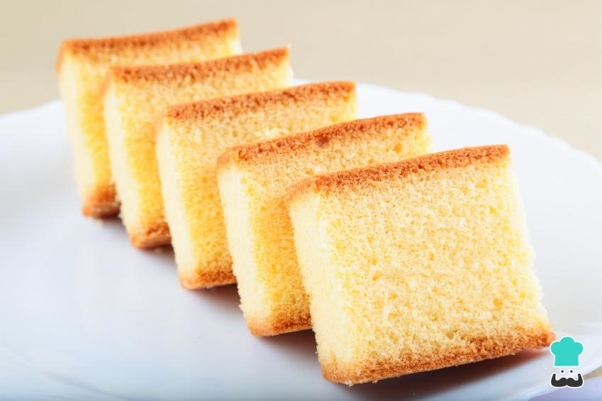
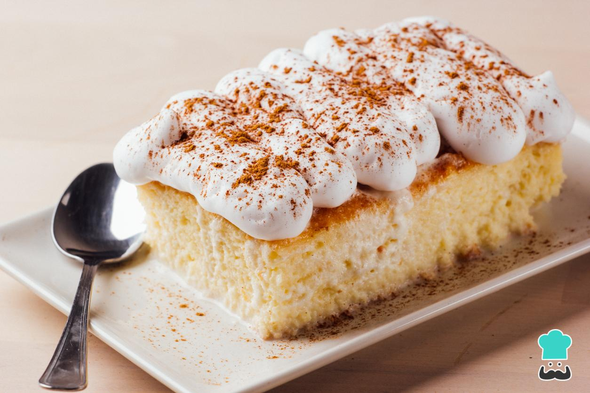
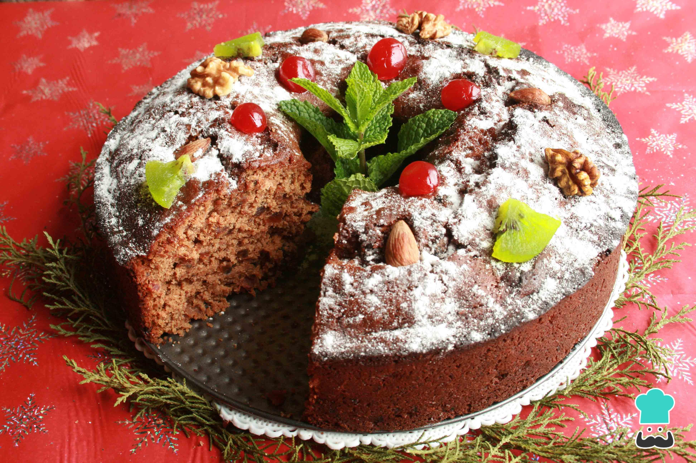

Bienvenido a Mi Mundo Dulce
Tu espacio creativo para explorar el mundo de la repostería
Recetas Destacadas

Torta Triple Chocolate
Cupcakes de Vainilla
Galletas Decoradas

Torta de Vainilla Esponjosa

Torta Tres Leches

Torta Negra Navideña
Nuestras Recetas
Galletas Decoradas
Torta de Vainilla Esponjosa
Torta Tres Leches
Torta Negra Navideña
Técnicas de Repostería
Montado de Merengue
Aprende la técnica perfecta para montar claras de huevo...